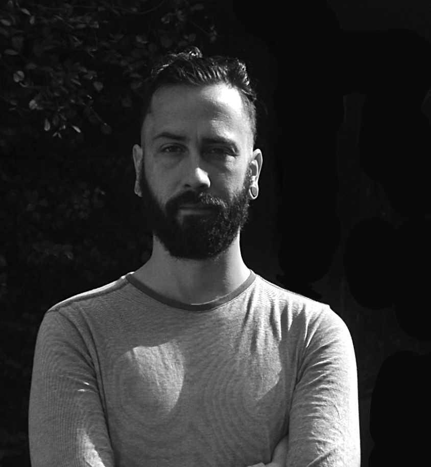

arte con el ruido y lo electrónico Improvisar el juego.
Bio
Nació en Córdoba, Argentina, en 1990. Terminó sus estudios secundarios en la Escuela Musical Collegium en 2008.En 2012 inicia en la programación con puredata a cargo de Alexandre Porres (São Paulo-Br) En 2020 ganó el premio performance virtual del INT y en 2021 el 1er premio Figueroa Digital. En 2021 cursó la diplomatura en Desarrollo de Videojuegos en UTN. En 2022 egresó de la Tecnicatura Universitaria en Creación Multimedial en la Universidad Provincial de Córdoba. También realizó el curso La inteligencia artificial como herramienta creativa dictado por el artista Daniel Canogar en Fundación Andreani (BsAs) y realizó el Diplomado en Desarrollo Artístico de Videojuegos en UNCuyo. En 2023 forma parte del grupo de investigación y mediaLab “Esotecnia” con el cual expuso en el museo Franklin provincia de San Juan. En la actualidad cursa la maestría en arte sonoro en UNQ e integra grupos de investigación orientados al arte en UPC y UNC.
Statement
Trabaj o desde el experimento lúdico con aquella tecnología que puedo intervenir y reapropiar, tanto en software o hardware que me permita libertades creativas. Disfruto de transitar los problemas técnicos que genera cada disciplina, más allá de la busqueda de un resultado puntual. Esto me lleva a explorar una gran variedad de técnicas como impresión y modelado 3 D, live coding, herrería, arte sonoro, programación, electrónica, fotografía, escultura, performance, etc. U tilizo desechos electrónicos y tecnologías de muy baj os recursos, por el aporte que brindan como material y por su plasticidad a la hora de la experimentación. Esta búsqueda ecléctica y voraz se materializa cuidadosamente, generando una tensión entre la sutileza de los gestos y la volatilidad de la experimentación. Busco formas de conservar, visibilizar y entender las lógicas de estos obj etos, su relación conmigo y su influencia en mi relación con el mundo